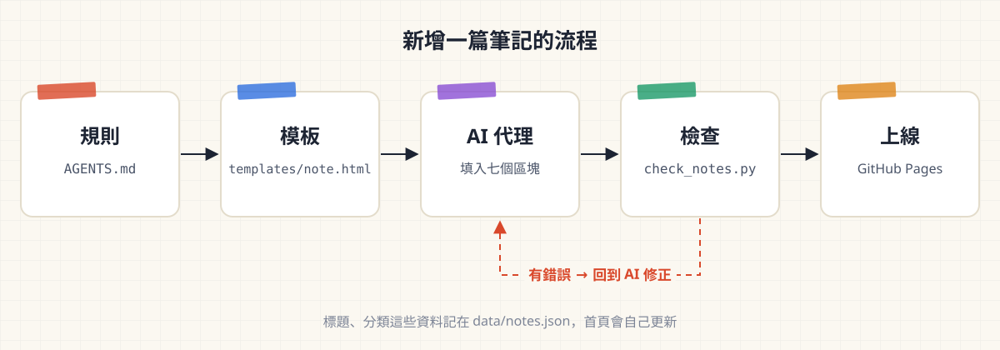

三個重點
- 放在專案根目錄、AI 開工前會先讀的 Markdown 檔。
- 內容是目的、結構、命名、模板、流程與禁止事項。
- 規則越具體、越能被程式檢查，AI 越不會亂改。
是什麼
README.md 是寫給「人」看的專案介紹；AGENTS.md 和 CLAUDE.md 則是寫給「AI 代理」看的工作守則。AI 每次開始工作前會先讀它，就像新同事報到第一天拿到的員工手冊。
AGENTS.md 是一種開放格式，OpenAI Codex、Cursor、Gemini CLI、GitHub Copilot 等許多工具都會讀取；CLAUDE.md 是 Claude Code 每次啟動自動載入的記憶檔，而且可以用 @檔名 匯入其他檔案。所以常見作法是：規則只寫在 AGENTS.md，CLAUDE.md 裡放一行 @AGENTS.md，兩邊就不會不同步——本站就是這樣做的。

| 檔案 | 寫給誰 | 誰會自動讀 | 典型內容 |
|---|---|---|---|
README.md | 人 | GitHub 首頁顯示 | 專案介紹、怎麼安裝、怎麼使用 |
AGENTS.md | 各種 AI 代理 | Codex、Cursor 等工具 | 專案規則、結構、流程、禁止事項 |
CLAUDE.md | Claude Code | Claude Code | 匯入 AGENTS.md＋ Claude 專用補充 |
怎麼用
- 寫下專案目的與對象
一句話定位、讀者是誰，再加上「不做什麼」。AI 有了方向才知道怎麼取捨。
- 畫出資料夾結構
用樹狀圖標出每個資料夾放什麼，再附一張「這個東西該放哪」對照表。
- 定義命名規則
用 ✅／❌ 的正反範例說明，比抽象描述有效得多。
- 固定內容模板
例如本站每篇筆記都是七個固定區塊，AI 只負責填內容，版面永遠一致。
- 寫出標準作業流程
把「新增」「修改」「下架」拆成編號步驟，AI 照著做就不會漏。
- 列出要做與不要做
尤其是「不要做」，例如不准引入框架、不准刪除既有頁面。
- 把規則變成檢查
寫一支腳本自動檢查規則，AI 做完自己跑、錯了自己修。
實際範例
最小可用的 AGENTS.md 骨架
# AGENTS.md — 我的專案
## 1. 專案目的
- 一句話定位：……
- 目標讀者：……
- 不做：……
## 2. 資料夾結構
（樹狀圖，加上每個資料夾放什麼）
## 3. 命名規則
- 檔名：小寫英文＋連字號，例如 rag-intro
- ❌ 不要：中文檔名、空白、大寫
## 4. 內容模板
每一頁固定包含：……（列出區塊與數量）
## 5. 新增內容的步驟
1. 複製 templates/page.html
2. 填完所有區塊
3. 執行 python scripts/check.py，零錯誤才算完成
## 6. 不要做
- 不要引入新框架
- 不要刪除既有頁面讓 Claude Code 共用同一份規則
# CLAUDE.md
@AGENTS.md常見錯誤
小測驗
1. 下列哪一句最適合寫進 AGENTS.md？
解析：具體、有範例、可以被檢查的規則，AI 才能穩定照做。
2. 想讓 Claude Code 和其他 AI 工具共用同一份規則，比較好的做法是？
解析：規則只有一個來源，就不會出現兩份內容不一致的問題。
3. 為什麼要搭配檢查腳本？
解析：文件是「說」，腳本是「查」。兩者搭配，AI 才能自己檢查、自己修正。
延伸閱讀
- AGENTS.md 官方網站格式說明，以及支援 AGENTS.md 的工具列表。
- Claude Code：記憶與 CLAUDE.mdCLAUDE.md 的位置與 @ 匯入語法。
- 本站的 AGENTS.md一份完整的實際範例，可以直接參考。